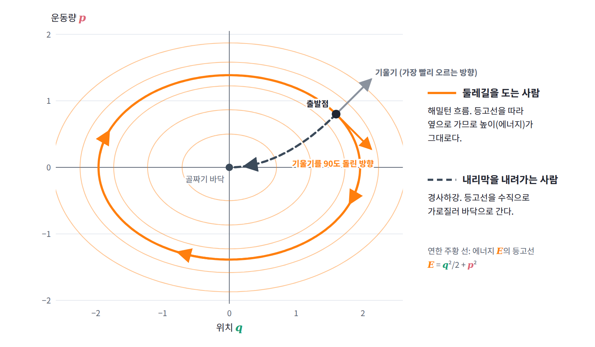

해밀턴 방정식: 등고선을 따라 도는 흐름
그네에서 찾은 두 식은 위치 하나, 운동량 하나일 때의 이야기였다. 자유도가 n개인 계에서는 해밀토니안으로 운동을 어떻게 적을까? 그리고 그 식이 정하는 움직임은 위상공간에서 어떤 그림을 그릴까?
짝마다 두 식
위치 좌표마다 그 짝인 운동량이 하나씩 있으므로, 짝마다 그네에서 찾은 두 식을 하나씩 쓰면 된다. 이렇게 얻은, 한 번 미분한 양만 든 방정식 2n개를 해밀턴 방정식 (Hamilton’s equations)이라 한다.
기울기를 90도 돌린 방향
이 두 식이 그리는 그림을 그네에서 보자. 에너지의 기울기 벡터 (∂E/∂q, ∂E/∂p)는 에너지가 가장 빨리 커지는 방향을 가리키고, 에너지가 같은 점들을 이은 등고선에 수직이다. 그런데 상태가 움직이는 방향 (q̇, ṗ) = (∂E/∂p, −∂E/∂q)는 이 기울기 벡터의 두 성분을 맞바꾸고 한쪽에 마이너스를 붙인 것, 곧 기울기를 시계 방향으로 90도 돌린 벡터다. t = π/4인 상태에서 기울기 (0.707, −0.707)과 움직임 (−0.707, −0.707)의 내적은 −0.5 + 0.5 = 0이다. 기울기에 수직으로 움직이니 상태는 등고선을 벗어나지 않고, 에너지는 계산할 필요도 없이 보존된다. 식으로 확인하면 dE/dt = (∂E/∂q)q̇ + (∂E/∂p)ṗ = (∂E/∂q)(∂E/∂p) − (∂E/∂p)(∂E/∂q) = 0이다. 위치와 운동량의 평면에서 상태는 에너지의 등고선을 따라 흐른다.
해밀토니안이 시간에 직접 의존하지 않으면, 자유도가 n개여도 짝마다 같은 계산이 되풀이되어 ℋ는 운동하는 동안 변하지 않는다. 에너지 보존이 따로 증명할 정리가 아니라 방정식의 모양에서 저절로 나오는 성질이 된 것이다.
등고선만으로 운동의 종류 가르기
에너지의 등고선이 곧 궤도라면, 운동방정식을 풀지 않고 등고선만 그려서 어떤 운동들이 가능한지 알아낼 수도 있지 않을까? 진자로 확인해 보자. 길이 l인 끈에 매달린 질량 m의 진자는 각도 θ와 그 운동량 p = ml²θ̇으로 ℋ = p²/(2ml²) − mgl cos θ라 쓸 수 있다. 해밀턴 방정식은 θ̇ = p/(ml²), ṗ = −mgl sin θ이고, 첫 식을 미분해 둘째 식에 넣으면 익숙한 운동방정식 ml²θ̈ = −mgl sin θ가 돌아온다. 이제 m = l = g = 1로 두면 ℋ = p²/2 − cos θ이고, 위상공간의 등고선은 두 종류로 나뉜다. ℋ < 1인 등고선은 원점을 감싸는 닫힌 고리로 진자가 앞뒤로 흔들리는 운동이고, ℋ > 1인 등고선은 θ 방향으로 끝없이 이어지는 물결선으로 진자가 꼭대기를 넘어 빙글빙글 도는 운동이다. 가장 낮은 곳에서 운동량 1.9로 밀면 ℋ = 0.805라서 되돌아오고, 2.1로 밀면 ℋ = 1.205라서 꼭대기를 넘는다. 그 사이 어딘가에 두 운동이 갈리는 경계가 있을 텐데, 진자가 꼭대기(θ = π)에 겨우 닿아 멈추는 에너지가 ℋ = 0 − cos π = 1이므로 그 경계는 ℋ = 1의 등고선이다. 이렇게 두 종류의 운동을 가르는 등고선을 분리선(두 운동을 가르는 경계, separatrix)이라 한다. 운동방정식을 한 번도 풀지 않고 에너지의 등고선만 그려서 운동의 종류를 모두 알아낸 셈이다. 이렇게 위치–운동량 평면에 궤도(등고선)를 모두 그린 지도를 위상 초상(phase portrait)이라 한다.
ML에서: 경사하강은 가로지르고, 해밀턴 흐름은 따라 돈다
ML을 하는 독자에게는 경사하강과 나란히 놓는 것이 가장 알기 쉽다. 경사하강은 기울기의 반대 방향, 곧 등고선을 수직으로 가로질러 내려가고, 해밀턴 흐름은 같은 기울기를 90도 돌린 방향, 곧 등고선을 따라 옆으로 간다. 산에 빗대면 경사하강은 가장 가파른 내리막을 골라 골짜기로 내려가는 사람이고, 해밀턴 흐름은 같은 높이의 둘레길을 따라 산을 한 바퀴 도는 사람이다. 같은 기울기를 쓰면서도 한쪽은 손실을 줄이고 다른 쪽은 에너지를 지킨다.

문제 1. 부호 하나
선생님의 수업. 김민준(학부 3학년, ML 강의 몇 개 수강)과 이서연(수학과 3학년)이 문제를 풀고, 선생님이 틀린 곳을 짚는다.
질량 1인 추가 용수철에 매달려 있고 해밀토니안이 ℋ = p²/2 + 2q²이다. 해밀턴 방정식을 쓰고, q = 1, p = 0에서 출발한 상태가 위상공간에서 그리는 모양과 한 바퀴 도는 데 걸리는 시간을 구하라.

∂ℋ/∂p = p니까 q̇ = p, ∂ℋ/∂q = 4q니까 ṗ = 4q. 둘을 합치면 q̈ = 4q고, 풀면 q = cosh 2t예요. 모양은… t = 1이면 q가 3.76, t = 2면 27.3이요. 계속 커지는데요? 용수철이 추를 우주로 날려 보내네요.

민준아, 마이너스 빼먹었어. ṗ = −∂ℋ/∂q잖아. ṗ = −4q니까 q̈ = −4q, q = cos 2t, p = −2 sin 2t. 가로 반지름 1, 세로 반지름 2인 타원이고, 한 바퀴는 π초야.

서연 학생 답이 맞아요. 민준 학생, 틀린 답이라도 스스로 알아챌 방법이 있었어요. 민준 학생의 해에서 t = 1일 때 ℋ를 계산해 볼래요?

p = 2 sinh 2 ≈ 7.25니까 ℋ = 26.3 + 28.3 = 54.6이요. 처음엔 2였는데… 에너지가 스물일곱 배가 됐네요. 보존돼야 하는 건데.
그게 검산이에요. 부호가 맞으면 속도는 에너지 기울기를 90도 돌린 방향이라 등고선을 따라 돌아요. 부호를 틀리면 그 방향이 등고선을 따라가지 않고 가로지르게 돼서, 이 해밀토니안에서는 에너지가 커지는 쪽으로 끌려 나가요.

등고선 ℋ = 2가 바로 제가 구한 타원이네요. q = 1, p = 0에서 ℋ = 2니까 출발점이 이미 그 타원 위에 있어요. 방정식을 풀지 않아도 모양은 나오는 거고요.

그럼 앞으로 해밀턴 방정식 풀고 나면 ℋ부터 다시 넣어 볼게요. 코드에 assert 거는 것처럼요.